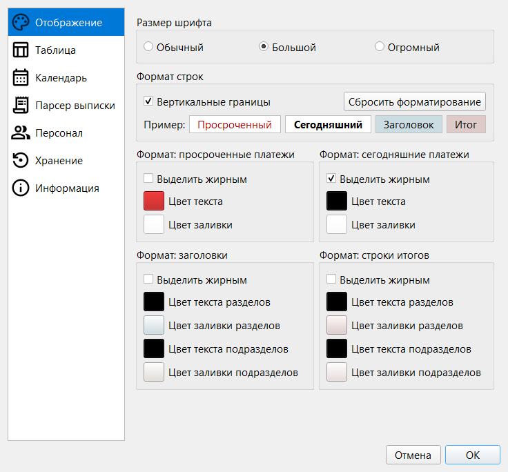
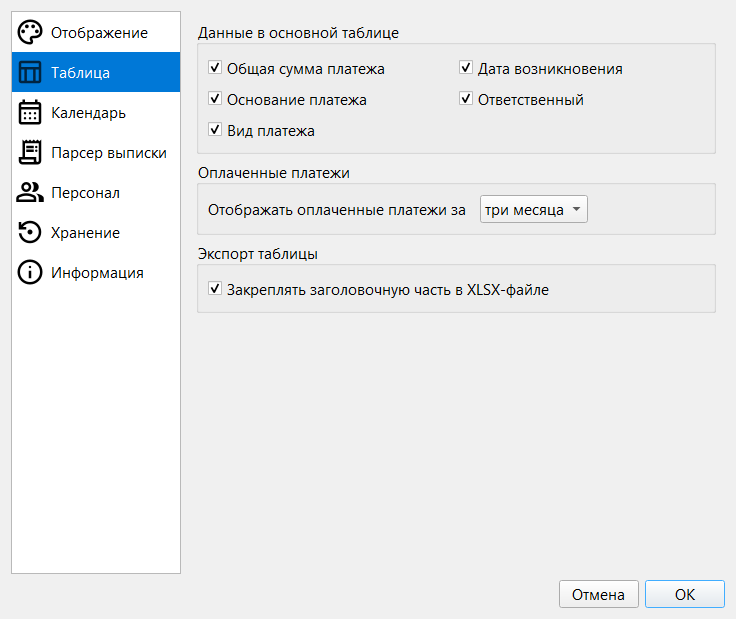
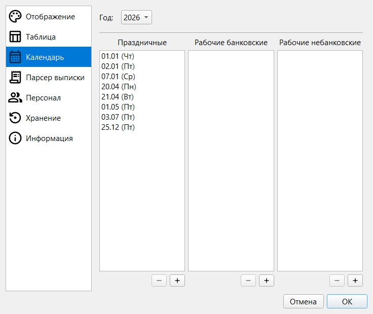
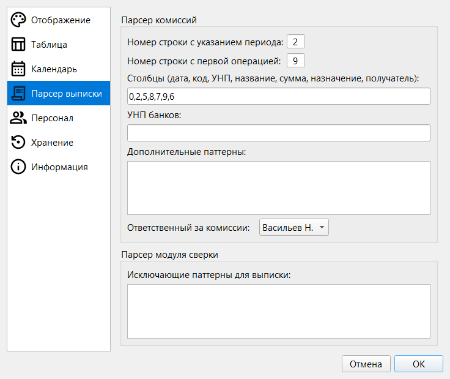
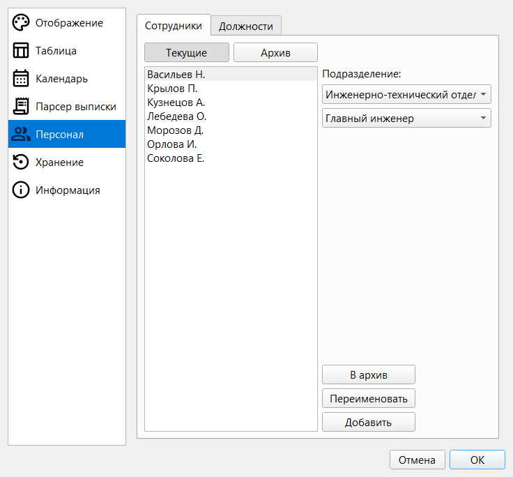
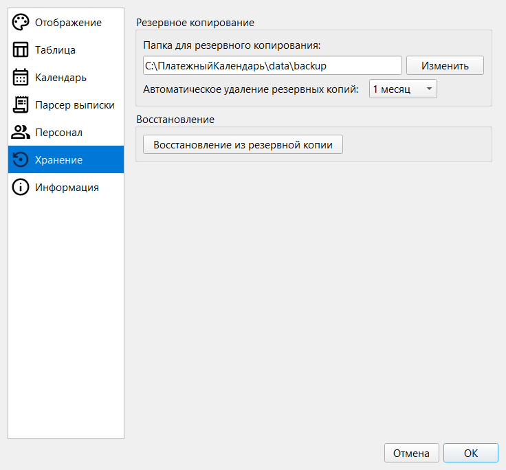
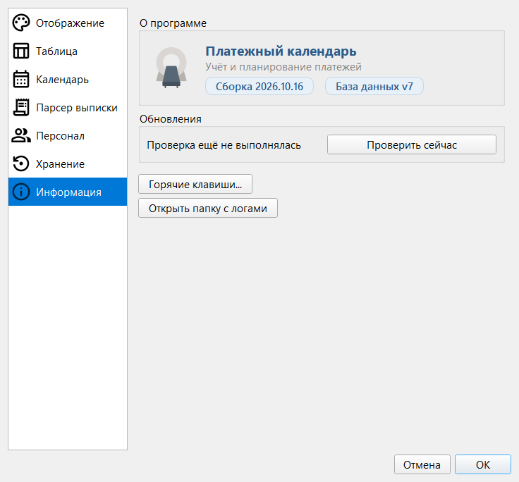

Раздел 12. Настройки |
Окно «Настройки» открывается кнопкой «Настройки» на панели инструментов. Разделы окна — список слева.
|
⚠️ Внимание. «Отображение», «Таблица» и «Хранение» хранятся на этом компьютере, у каждого устройства свои. «Календарь», «Парсер выписки» и «Персонал» хранятся в базе и передаются при синхронизации. Если вы изменили что-то из них, а другой пользователь тоже вносил изменения и отправил их раньше, программа не сможет объединить правки сама: будет конфликт (раздел 14). |
Отображение |

Рис. 39. Раздел «Отображение».
| Настройка | Что меняет |
|---|---|
| Размер шрифта | «Обычный», «Большой», «Огромный» — шрифт всей программы, применяется без перезапуска |
| Форматы | Цвет текста, заливка и жирность для просроченных и сегодняшних платежей, заголовков (разделов и подразделов) и итогов; блок «Пример» показывает результат до сохранения |
| Вертикальные границы | Линии между столбцами таблицы |
| Сбросить форматирование | Возвращает цвета, жирность и «Вертикальные границы» к исходным |
По умолчанию просроченные платежи выделены красным текстом, сегодняшние — полужирным. Те же цвета попадают в экспорт (раздел 10).
Таблица |

Рис. 40. Раздел «Таблица».
| Настройка | Что меняет |
|---|---|
| Данные в основной таблице | Показывать или скрывать столбцы «Общая сумма платежа», «Основание платежа», «Вид платежа», «Дата возникновения», «Ответственный»; скрытые в окне экспорта по умолчанию не отмечены (раздел 10) |
| Отображать оплаченные платежи за | «три месяца» (по умолчанию), «полгода», «один год», «все время»; отсчёт идёт от даты последней оплаты |
| Закреплять заголовочную часть в XLSX-файле | Шапка остаётся на месте при прокрутке экспортированного файла (раздел 10) |
|
⚠️ Внимание. Платежи, полностью оплаченные раньше выбранного срока, пропадают из таблицы совсем: их не покажет ни фильтр «Оплаченные», ни поиск, и в экспорт они не попадут. В базе они остаются. Чтобы увидеть их снова, увеличьте срок. На отчёты плана и сверку выписки настройка не влияет. |
Календарь |

Рис. 41. Раздел «Календарь».
Календарь нужен для расчёта сроков оплаты (раздел 7). Без внесённых дат все будни рабочие, а суббота и воскресенье выходные.
Парсер выписки |

Рис. 42. Раздел «Парсер выписки».
Как программа читает файл банковской выписки; если банк изменил формат файла, поменяйте и настройки.
| Поле | Где используется |
|---|---|
| Номер строки с указанием периода, номер строки с первой операцией, столбцы | Сверка выписки (раздел 8) и учёт комиссий (раздел 9) |
| УНП банков, дополнительные паттерны, ответственный за комиссии | Учёт комиссий (раздел 9) |
| Исключающие паттерны для выписки | Только сверка: строки выписки, в назначении которых есть такой фрагмент, пропускаются (раздел 8) |
| Паттерны группы «Выплаты работникам» | Только сверка: операции с таким фрагментом объединяются за день в одну строку. Пустое поле отключает объединение (раздел 8) |
Персонал |

Рис. 43. Раздел «Персонал», вкладка «Сотрудники».
Из этого списка выбирается ответственный в платежах (раздел 3) и документах договоров (раздел 6).
Должности добавляются, переименовываются и удаляются (Del) в выбранном подразделении; название не должно повторяться внутри подразделения.
|
⚠️ Внимание. Изменения во вкладке «Должности» сохраняются сразу, «Отмена» их не вернёт. При удалении должности сотрудники теряют привязку к ней и остаются в своём подразделении. Сотрудники, добавленные или изменённые во вкладке «Сотрудники», сохраняются только по «ОК». |
Хранение |

Рис. 44. Раздел «Хранение».
| Настройка | Что меняет |
|---|---|
| Папка для резервного копирования | Куда программа складывает копии базы; папка должна существовать |
| Автоматическое удаление резервных копий | «1 месяц» (по умолчанию), «6 месяцев» или «никогда». Более старые копии программа удаляет сама |
| Восстановление из резервной копии | Заменяет текущую базу выбранной копией |
|
⚠️ Внимание. Восстановление из резервной копии необратимо заменяет текущие данные; перед заменой программа сохраняет их в |
Информация |

Рис. 45. Раздел «Информация».
Что может пойти не так |
| Что вы видите | Что случилось | Что делать |
|---|---|---|
| «Папка для резервного копирования не указана или указана неверно» | Папки нет или поле пустое | Выберите существующую папку кнопкой «Изменить» |
| «Укажите номера всех семи столбцов выписки (цифры через запятую)» | В поле «Столбцы» не семь чисел | Введите семь номеров через запятую, например 0,2,5,8,7,9,6 |
| «Поле с перечнем УНП банков заполнено неверно (разрешены только девятизначные УНП через запятую)» | В «УНП банков» не девятизначные номера или лишние символы | Исправьте поле с красной рамкой |
| «Эту должность сейчас занимает …. Сначала снимите этого работника с должности.» | Должность занята другим действующим сотрудником | Снимите должность с него («— нет —») или переведите его в архив |
| «Обнаружена должность, занятая сразу несколькими активными работниками. Исправьте это перед сохранением.» | Такое случилось после возврата сотрудника из архива | Оставьте должность одному сотруднику |
| «Должность "…" уже есть в этом подразделении» | Название повторяется | Выберите другое название |
| «Не удалось создать должность», «…переименовать должность», «…удалить должность» | Изменение не записалось | Повторите; если повторяется — обратитесь к ответственному за программу |
| «В список "…" можно добавлять только дни: …» | Праздник вносится в выходной или рабочая суббота в будний день | Внесите дату в подходящий список |
| «Эта дата уже есть в списке "…"» | Дата занесена в другой список | Уберите её оттуда или оставьте как есть |
| «Не удалось сохранить данные персонала (подробности см. в логе)» | Список сотрудников не записался. Остальные настройки к этому моменту уже сохранены | Нажмите «ОК» ещё раз; если не помогает, обратитесь к ответственному за программу |
| «При попытке восстановления произошла ошибка (подробности см. в логе)» | Выбранный файл не подошёл или не удалось заменить базу | Выберите другую копию (раздел 13) |